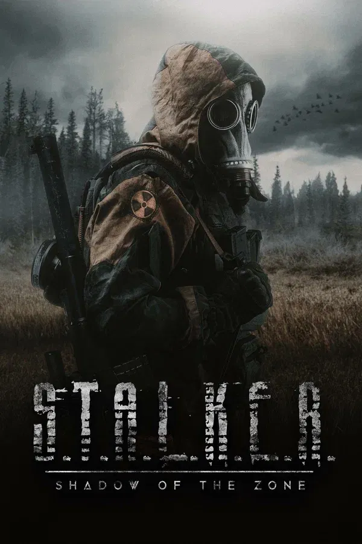
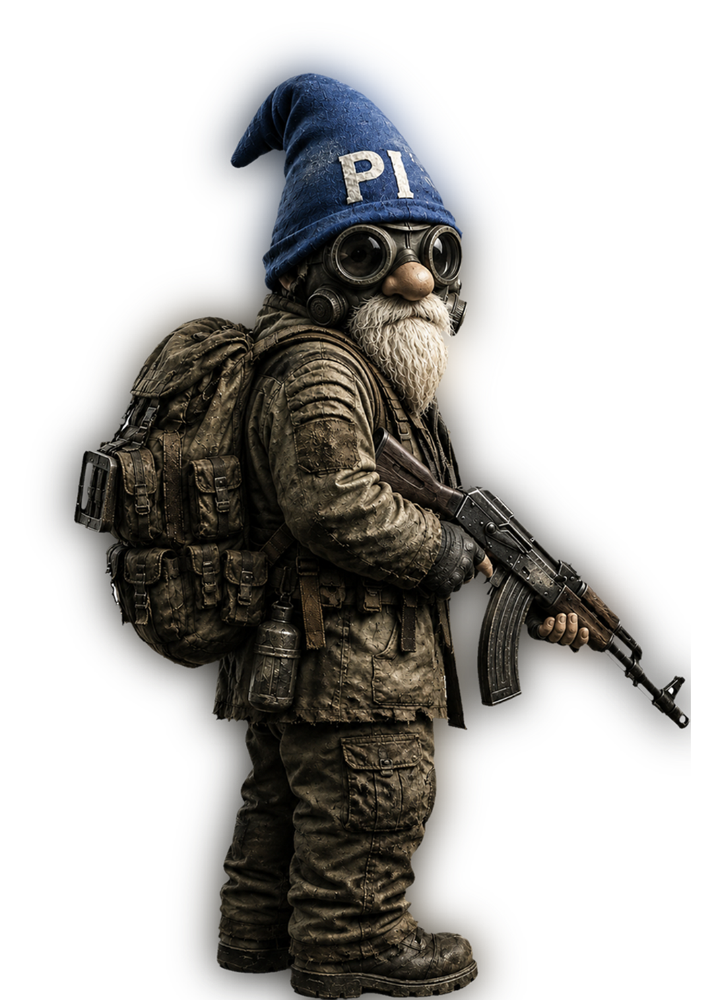
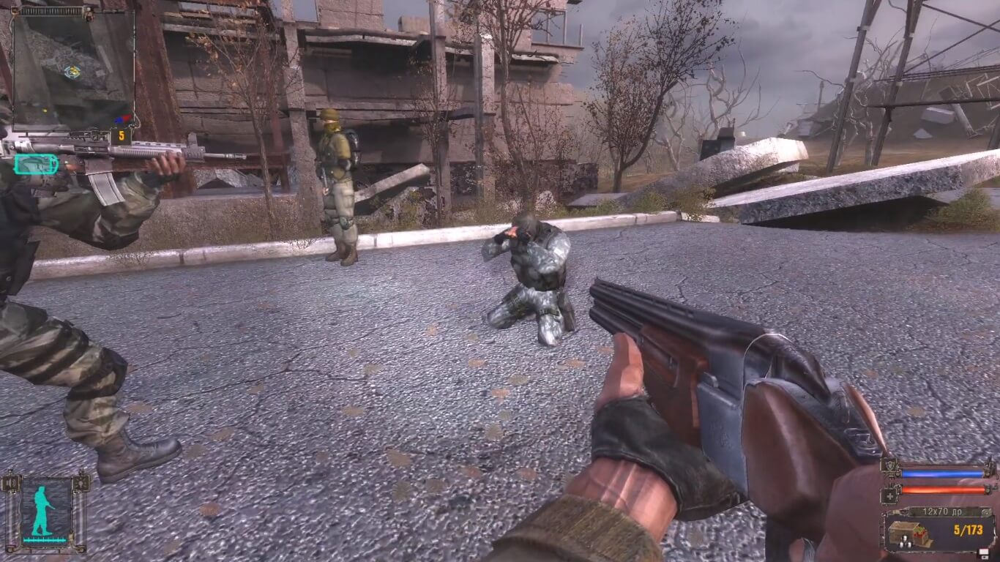
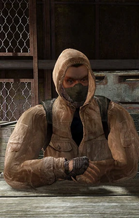
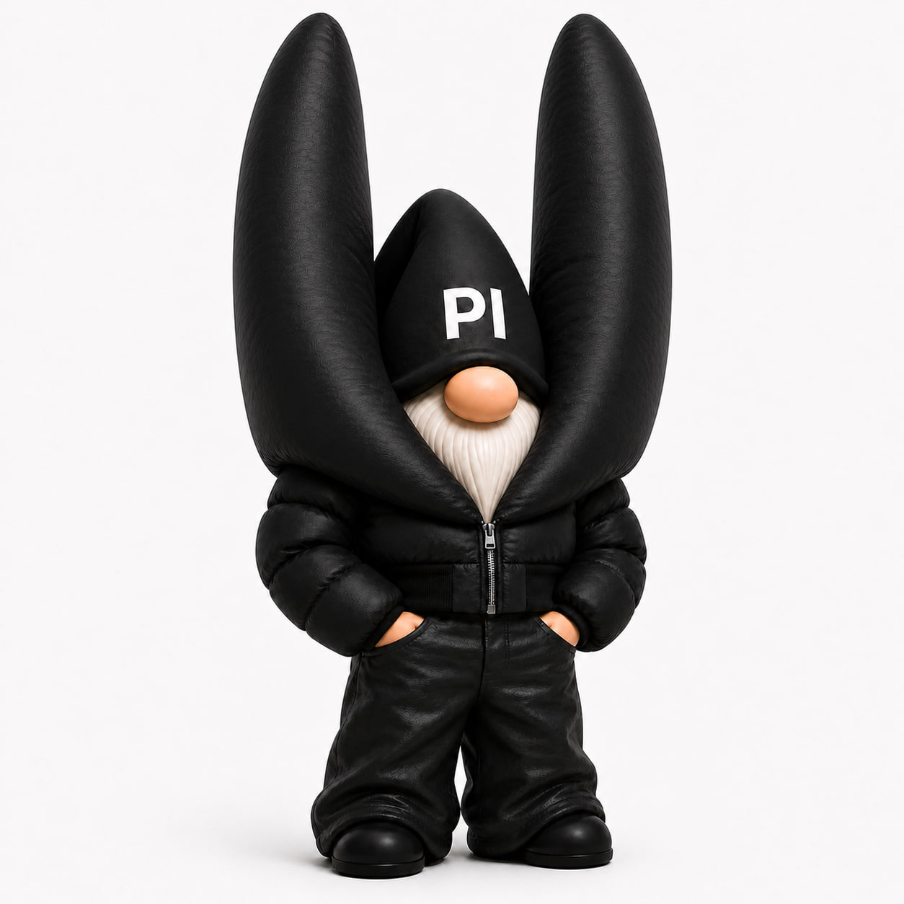
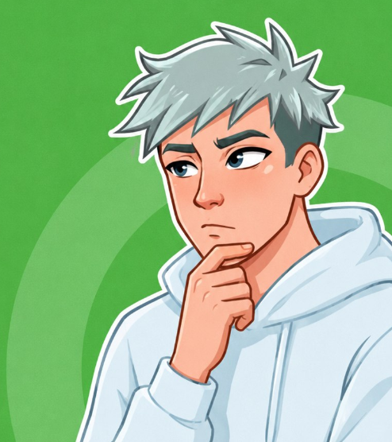

Материалы дела содержат спойлеры к оригинальному S.T.A.L.K.E.R.: Shadow of Chernobyl (2007) — все 7 концовок и разбор того, какое прохождение действительно ведёт к правде.
У оригинального S.T.A.L.K.E.R.: Shadow of Chernobyl семь концовок. Пять из них — иллюзии, которые Монолит показывает тем, кто свернул не туда: за деньгами, властью или местью. Разбираем, что на самом деле определяет финал — и какой путь заслуживает звания «правильного».


У Shadow of Chernobyl нет выбора концовки через диалоговое меню. Игра тихо считает, что вы делали всю партию: сколько денег накопили, кого убили, а кого пощадили — и в Саркофаге выдаёт соответствующий приговор.
Игра ведёт скрытый счётчик денег на пути к Желающему исполнять желания. Слишком большая сумма на карте — и Монолит покажет не правду, а то, чего хочет ваша жадность.

Вторая переменная — сколько сталкеров вы убили и как обошлись с лидерами группировок «Долг» и «Свобода». Чистая репутация и минимум лишних смертей открывают дорогу к настоящему финалу, а не к его тёмным двойникам.

Игра классифицирует финалы сама: «реальные» — это то, что происходит на самом деле, «мнимые» — галлюцинации, которые Монолит показывает тем, кто добрался до Желающего нечестным путём.
Меченый расстреливает капсулы с телами тех, кто слился с «О-Сознанием», отказавшись от лёгкого пути. Зона исчезает — свобода куплена ценой чужого бессмертия.
Меченый ложится в колбу и становится частью коллективного разума, который управляет Зоной. Тоже «реальный» финал — просто другой ответ на один и тот же вопрос.
С крыши сыплются гайки вместо золота — жадность обманула Меченого раньше, чем это сделал Монолит. Героя заваливает обломками собственной мечты.
Меченый превращается в статую, увешанную артефактами, — вечность в виде музейного экспоната вместо настоящей свободы.
Желание владеть всем оборачивается тем, что душа Меченого уходит в Монолит навсегда — власть, которую некому больше вручить.
Мир вокруг расцветает — но сам Меченый слепнет. Благое желание, исполненное буквально и без остатка.
Меченый желает исчезновения человечества — и растворяется в темноте под собственными галлюцинациями. Самый мрачный из ложных финалов.
Формально «реальных» концовки две — и обе честные. Но если ставить вопрос как в названии дела — какое прохождение правильное, а не просто настоящее — у архива есть позиция.

Дело проверено — нарушений не найденоЭто единственная концовка, которую нельзя получить случайно или через жадность — только через полный, честный прогон истории: без накопительства, без резни ради опыта, с чтением документов и пониманием того, кем был Стрелок. Механически она требует от игрока ровно того же, чего требует сама Зона — не поддаваться на лёгкие обещания.
Тематически она и завершает историю логичнее: Меченый разрушает машину, которая исполняет желания в обмен на подчинение, вместо того чтобы самому стать её частью. Это выбор в пользу неопределённой свободы против гарантированного, но чужого рая.
Именно в этих секторах решается, каким будет финал: где спустить деньги, что прочитать и кого не убивать без необходимости.
S.T.A.L.K.E.R.: Shadow of Chernobyl вышла 20 марта 2007 года эксклюзивно на PC. Консольных версий у оригинальной трилогии не было.
Нет. Игра проверяет ваши деньги, репутацию и решения только один раз — в финальной сцене у Желающего исполнять желания — и показывает ровно одну концовку.
Нет, но массовые убийства без необходимости двигают счётчик репутации в сторону ложных концовок вроде «Апокалипсиса». Достаточно не устраивать бессмысленную резню.
Пять из семи финалов игра сама маркирует как «мнимые» — по сюжету это галлюцинации, которые Монолит внушает Меченому вместо настоящего исполнения желания.
Дмитрий Г. проверил журнал решений: обмен «жизнь в Зоне → исполнение желания» заключён без обмана сторон, спорных статусов и накрутки жадности. Юрист Долга и Свободы подтверждают отсутствие претензий.

Проверено Дмитрием Г.